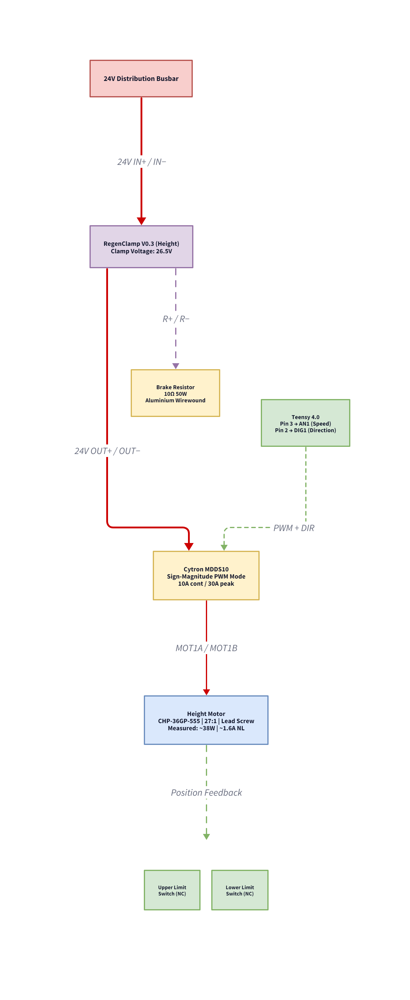

5.2.3 Height Adjustment — Electrical & Control
Requirements Cascade
The height-adjustment electrical subsystem responds to the following system-level requirements defined in the Robot Mechanism section:
| System Req | Subsystem Implication |
|---|---|
| RM-3 | ≥ 400 mm vertical stroke with ≤ 32 s full travel — motor must deliver ~800 rpm at the screw-jack input shaft |
| RM-1 | Structural stability — self-locking screw jack must hold position without motor power under punching loads |
Motor Specification & Selection
The vertical axis uses a CHP-36GP-555 brushed DC gear motor (24V, 36mm diameter) with an integrated all-metal planetary gearbox (27:1 ratio) driving the HK2T screw-jack input shaft. The motor was selected based on a back-calculated speed requirement of approximately 800 rpm at the jack input to achieve the RM-3 travel-time target.
| Parameter | Value |
|---|---|
| Model | CHP-36GP-555 |
| Type | Brushed DC with all-metal planetary gearbox |
| Supply voltage | 24V DC |
| Gearbox ratio | 27:1 (i27) |
| Output speed (no-load) | 440 RPM |
| Rated current | ~2.6 A |
| Stall current | ~21 A |
| Rated torque | ~1.37 N·m (14 kg·cm) |
| Shaft | 8 mm D-type |
| Encoder | AB phase Hall effect (present, currently unused) |
Motor Driver — Cytron MDDS10
The Cytron MDDS10 dual-channel motor driver operates in Sign-Magnitude mode, requiring two control signals: a PWM signal (speed) and a digital signal (direction). The corrected pin assignments are:
| Teensy Pin | MDDS10 Terminal | Signal Type | Function |
|---|---|---|---|
| Pin 3 | AN1 | PWM (0–255) | Motor speed — proportional to duty cycle |
| Pin 2 | DIG1 / IN1 | Digital (HIGH/LOW) | Motor direction — HIGH = up, LOW = down |
Self-Locking Safety
The HK2T screw-jack's travelling-nut design provides inherent self-locking: the lead angle of the screw thread is below the friction angle, meaning the column holds position even when motor power is removed. This is a critical safety feature, as the robot must not descend unexpectedly onto the user during training.
Regenerative Braking and Brake Resistor Sizing
The firmware ramp-down mitigation governs deceleration during height adjustment operations; the RegenClamp V0.3 dissipates residual back-EMF on the 24V bus at end-of-travel. At full rated speed, the motor armature decelerates over the firmware-controlled ramp, converting kinetic energy into a back-EMF voltage that is absorbed by the RegenClamp before it can exceed the PSU over-voltage protection (OVP) threshold (~28V).
The full back-EMF physics and software ramp-down mitigation are documented in System Troubleshooting Appendix: Defect 6. This section documents the hardware brake resistor sized against the confirmed motor specs.
Brake Resistor Derivation
Winding resistance from confirmed stall current:
Rwinding = Vsupply / Istall = 24V / 21A ≈ 1.14 Ω
The RegenClamp V0.3 clamps the bus at ~26.5V and diverts energy through the brake resistor:
Ibrake = 26.5V / 10Ω = 2.65A Ppeak = 26.5V × 2.65A ≈ 70W
Brake Resistor Validation
| Parameter | Previous (Estimated) | Confirmed (CHP-36GP-555) | Verdict |
|---|---|---|---|
| Winding resistance | ~1–2 Ω | 1.14 Ω (24V / 21A) | Within assumed range |
| Braking current | Estimated | 2.65 A (26.5V / 10Ω) | Below 30A clamp limit |
| Peak brake power | Estimated | 70W for <300ms pulses | 50W aluminium body handles short pulses |
| Max unprotected regen current | ~13A (estimated) | ~21A (V / Rwinding) | Strengthens RegenClamp necessity |
Height Motor Power Subsystem

Verification Targets
The following tests are planned for the height-adjustment electrical subsystem, mapping to the right side of the V-Model:
| Test | Criterion | Target | Status |
|---|---|---|---|
| Full-stroke actuation | 400 mm travel time | ≤ 32 s | Pending |
| Self-locking hold | Position drift under 10 kg static load, motor off | 0 mm drift over 60 s | Pending |
| Back-EMF safety | No PSU OVP trip over 5 emergency stops | 0 trips | Pending |